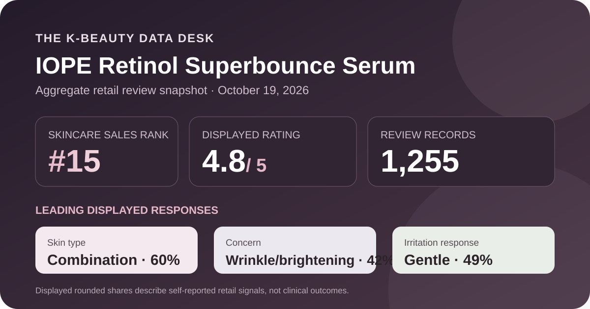
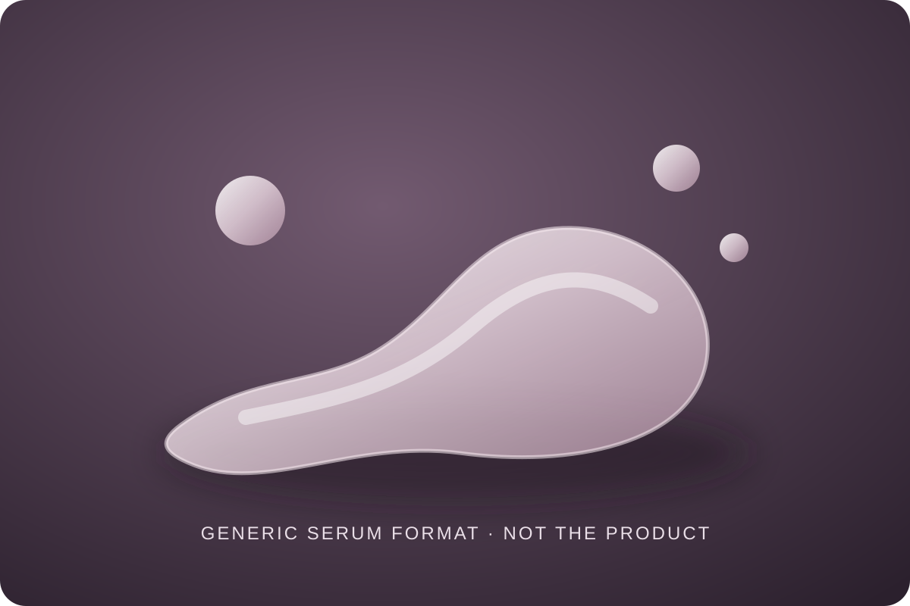

Data captured October 19, 2026. This analysis uses only Olive Young Korea's displayed aggregate rating, star distribution, and anonymous shopper polls. It does not reproduce or translate individual review text, names, or photos.

The short version: The listing showed 4.8 out of 5 from 1,255 review records. The displayed rating split was 86% five-star, 10% four-star, 3% three-star, 0% two-star, and 1% one-star. Combination skin, wrinkle or brightening concern, and the gentle response led their respective shopper polls.
The visible average was 4.8 stars. The product header displayed 1,255 review records, and the detailed review panel repeated the same count. That agreement matters because it avoids combining a current headline score with a different review total from another IOPE serum, an older pack, or a neighboring product page.
The detailed panel displayed this rounded star distribution:
The five-star share is the dominant storefront satisfaction signal, and the combined five- and four-star share is 96% as displayed. That is useful orientation, but it is not a controlled comparison. The interface does not reveal a common duration of use, a shared routine, a standardized application amount, or whether every record concerns the exact 20 ml plus 10 ml configuration shown on capture day.
The zero shown for two-star selections needs cautious reading. Whole-number percentages can hide a small nonzero share after rounding, so 0% should not be translated into “no shopper selected two stars.” Nor should the 4.8 average be treated as a probability that any one person will like the serum.
The skin-type poll showed 60% combination, 31% dry, and 9% oily. These displayed shares total 100%. Combination skin is clearly the largest self-reported group, while dry skin is still a substantial part of the poll and oily skin is a smaller minority.
This distribution describes who selected each label, not who achieved a measured benefit. Self-reported skin type can shift with season, climate, cleansing, other products, or the respondent's own definition. The poll also does not tell us whether the serum was the only routine change. It therefore cannot establish that the product works better for combination skin.
The concern poll displayed 42% wrinkle or brightening concern, 33% soothing, and 24% hydration. The values total 99% after rounding. These are broad questionnaire labels attached to shopper records; they are not measurements of wrinkles, pigmentation, redness, or water content.
The product title uses both “Retinol” and “Superbounce.” This article treats those words as listing identification only. It did not independently authenticate the full current formula, verify a concentration, establish delivery into skin, or test an effect on firmness or wrinkles. A concern-poll lead cannot fill those evidence gaps.
The irritation poll showed 49% gentle, 48% ordinary, and 3% felt irritation. The gentle response leads by only one percentage point over the middle response. That is a much more mixed storefront signal than a simple “gentle serum” label would suggest.
Self-reported irritation answers cannot rule out stinging, dryness, eye-area discomfort, allergy, or incompatibility with another step. The visible 3% response also shows why the average score should not be converted into a tolerance guarantee. Use frequency, application area, storage, and precautions should come from the current package and advice appropriate to the individual's circumstances.

The retailer places this item in the essence, serum, and ampoule category and calls it a serum. In general format terms, a serum is a leave-on skincare format intended to spread in a relatively thin layer. That category alone does not reveal this product's exact viscosity, slip, scent, tack, absorption speed, finish, or behavior under sunscreen and makeup.
I did not handle or apply this product. The illustration above is deliberately generic and does not reconstruct its actual color or texture. It also should not be read as an ingredient or performance diagram. Anyone considering the serum should verify the current ingredient list, directions, and precautions on the regional package rather than infer them from a title or a crowd rating.
At capture, the Korean listing showed a ₩33,000 reference price and a ₩23,900 promotional price. The title described a 20 ml serum with a 10 ml addition. That makes the captured page a promotional configuration rather than a timeless single-unit price reference.
Prices, coupons, gifts, inventory, and selected configurations can change quickly. Before comparing value, verify the current quantity, seller, checkout total, return terms, and whether the extra 10 ml remains part of the offer. Review records may also span older package designs, quantities, or promotions rather than only the exact configuration visible on October 19.
The defensible reading is narrow: this was the first distinct unpublished product after fourteen higher-ranked listings were excluded for existing coverage; its 1,255-record profile leaned strongly toward high star selections; combination skin dominated the skin-type poll; wrinkle or brightening concern led the concern responses; and the irritation poll was nearly divided between gentle and ordinary.
Those signals make the listing relevant for readers comparing serum formats and current IOPE promotions. They do not justify calling it a proven wrinkle treatment, a guaranteed firming product, a universally gentle retinol serum, or a certain match for combination skin. A sound next step is to check the current label and regional formula, consider personal tolerance history, and seek professional guidance when a medical skin concern is involved.
Combination skin was the largest displayed skin-type response at 60%, followed by dry skin at 31% and oily skin at 9%. That describes poll representation, not proven suitability or a guaranteed result.
The wrinkle or brightening label led the displayed concern poll at 42%, but that is a shopper-selection signal rather than a clinical measurement or proof of a treatment effect.
The captured irritation poll showed 49% gentle, 48% ordinary, and 3% felt irritation. These rounded self-reported shares cannot predict individual tolerance.
The listing identifies a serum format. This analysis did not apply the product and does not claim a specific viscosity, scent, absorption speed, finish, or layering behavior.
It is a retail satisfaction signal across 1,255 linked records. It is not a clinical trial, proof of efficacy, or a prediction for one person's skin.
Source: Olive Young Korea product page, captured October 19, 2026. Product title, ranking, pack, price, rating, review count, star shares, and poll values can change.
Published by The K-Beauty Data Desk. The source does not independently verify every buyer's identity, and this page is an editorial analysis of retailer-displayed aggregates—not medical advice or a substitute for the current product label.
← All reviews · Review-volume rankings · Skin-poll explorer · Methodology